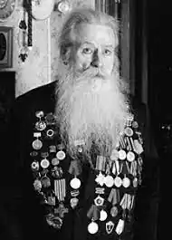

Народився 27 лютого 1926 року у селі Селезенівка (нині Сквирський район Київської області), в багатодітній родині сільських вчителів. Сім'я складалася з 13-ти осіб.
28 червня 1943 року у гестапівській в'язниці Кракова був інсценований розстріл Вадима Бойка.[3]
У шістнадцять років був вивезений на роботи до "Третього Рейху". Здійснив шість втеч з нацистських тюрем та концентраційних таборів. Зазнав тортур у Краківському гестапо. Згодом усе пережите описав у своїх автобіографічних творах. Закінчив Київський інститут фізичної культури. Учасник війни. В книгах його біографія в'язня обривається на півслові. Дещо про те, що було далі із інтерв'ю: "Історики, літератори-дослідники вважають, що це був єдиний випадок за весь час існування концтабору Освенцим, коли в'язень зумів врятуватися з газової камери. За чотири роки у газові камери та печі крематорію Освенцима було відправлено близько 5 мільйонів чоловік. Настав 1945 рік. Наші війська стрімко просувалися вперед. У в'язнів з'явилася надія на порятунок. Але агонізуюча Німеччина мала потребу в усе більшій кількості рабів. 20 січня з Освенцима відійшов углиб рейху останній ешелон з в'язнями. Їх везли у металевих пульманівських вагонах без їжі, води та тепла. Через 5 діб ешелон, у якому було три тисячі в'язнів, прибув до концтабору Маутхаузен (Верхня Австрія). А коли двері вагонів відкрили, то виявилося, що половина з них померла в дорозі. Прибулих загнали в 19-й ізольований карантинний блок, який в'язні називали "доходилівкою". 12 лютого в'язнів цього блоку розсортували у різні філіали Маутхаузена, яких майже півсотні було розкидано по всій території Австрії. Вадим потрапив до концтабору "Лінц". На новому місці наш герой став активним членом підпілля, яким керував майор Михайло Янковський. Вадим попав у взвод охорони штабу. Командиром був Михайло Чернишов. А радянські війська підходили ближче і ближче. 1 травня 1945 року під час бомбардування американською авіацією взвод Чернишова виконував роботи на пошкоджених залізничних шляхах навколо Лінца. За знаком командира в'язні накинулися на німецьку охорону та знищили її. Заволодівши зброєю, загін вирушив у рейд ворожими тилами назустріч нашим військам. До нього приєднувалися інші втікачі з концтаборів та таборів військовополонених. Тільки за один день загін із 30 чоловік збільшився до 123-х. Просуваючись з боями, загін зазнавав великих втрат — живими залишилося тільки шестеро, змучених і поранених. Добравшись до наших військ, Бойко підлікувався у медсанбаті і, склавши військову присягу, у складі діючої армії пішов добивати фашистів. Після закінчення війни Вадим Якович ще п'ять років служив в армії. Його нагороджували Почесними грамотами командування та іменними годинниками. Він має понад двадцять урядових нагород, серед яких орден "Великої Вітчизняної війни" II ступеня, медаль "За відвагу", а тепер і орден України "За мужність" III ступеня. Про мужність "Орляти" — Вадима Бойка, стало широко відомо у післявоєнній Польщі. І він з рук Президента Войцеха Ярузельського отримав орден "Освенцимський хрест"." "незважаючи на Освенцим і всі переломи, став майстром спорту з акробатики і п'ятиразовим чемпіоном-військовим Прикарпатського військового округу зі стрілецьких видів спорту. І снайпером номер один був." Після війни, у Києві, "десять років прожив у гуртожитках — спершу студентських, а потім робочих." "Я працював вантажником на товарній станції, в результаті чого зламав ліву руку. Після цього відновлювався на кафедрі лікувальної фізкультури. І так склалося, що потім став першокласним масажистом. Працював я в академіка Єлєцького, який був на той час головним ортопедом України, і завідував кафедрою лікувальної фізкультури. Це затягнулося на декілька років. Я душу вкладав у цю роботу, в мене опухали пальці від перенапруження, коли робив масаж." "У 60-х роках мене активно почали передавати з однієї родини в іншу. А платили ж як! Яка-небудь жінка вагою 160 кг, лягає на стіл, і я повинен її масажувати від вух до п'ят дві години. А її чоловік — директор центрального гастроному на Хрещатику — обслуговував партійну еліту. І він мені платив (тоді за 1 карбованець можна було їздити півдня по Києву) 25 карбованців лише за один масаж. Все, щоб я його жінку обслуговував. Я над нею прів, а потім мокрий весь залазив у них же вдома в душ — вони займали п'ятикімнатну квартиру, хоча тоді півмільйона людей жило в підвалах разом із щурами. Вони тримали кухаря вдома, який їх обслуговував за великі гроші, і я в них же й обідав. Генеральський обід і 25 карбованців! Потім ця родина передала мене своїм родичам: "Ой, слушайте, обслужите. Это хорошие люди, они вам будут хорошо платить". Так я почав працювати на дві сім'ї. І через рік купив своїм батькам у Києві шикарну кооперативну квартиру. Це був проект навіть не київських архітекторів, а чеських. Будинок із червоної цегли біля парку." Сімейне життя. В молодості пережив нещасливе кохання і хотів покінчити з життям: "А первая любовь у меня была трагическая. Всю жизнь я любил одну женщину. И сейчас люблю.". В 59 років одружився з Капітоліною (61 рік), з якою прожив 25 років до її смерті. Помер 18 грудня 2019 року. Похований у Києві, на Лісовому кладовищі (могила спільна з дружиною, Капітоліною Бойко, — між 20 та 22 ділянками). Нагороджений орденами та медалями: орден "Вітчизняної війни" II ступеня; орден "За мужність" ІІІ ступеня; медаль "За відвагу" Був нагороджений орденами і медалями багатьох країн світу. Про письменника Вадима Бойка створено два документальних кінофільми. У Радянському союзі, на 40-річчя перемоги (1985 р.) під назвою "Слово после казни". У 2005 р. в Канаді створено багатосерійний документальний кінофільм двома мовами: українською та англійською, під назвою "Сповідь страченого".